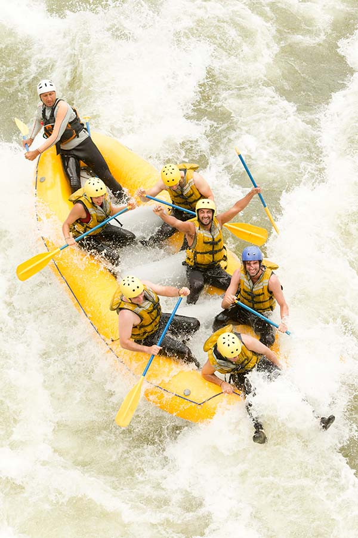
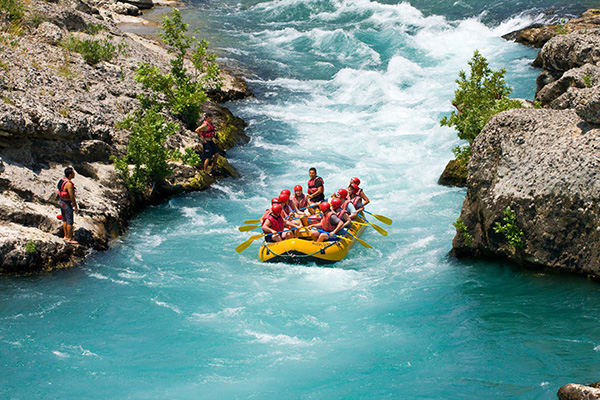

Nossa missão é proporcionar experiências inesquecíveis e seguras em corredeiras para aventureiros de todos os níveis. Valorizamos a preservação ambiental, o trabalho em equipe e a paixão pela natureza.



Nossa missão é proporcionar experiências inesquecíveis e seguras em corredeiras para aventureiros de todos os níveis. Valorizamos a preservação ambiental, o trabalho em equipe e a paixão pela natureza.
Fundada em 2010 por entusiastas dos esportes aquáticos, a Corredeiras Radicais começou com apenas dois botes e muita coragem. Ao longo dos anos, expandimos nossas rotas, treinamos uma equipe altamente qualificada e já guiamos mais de 50.000 clientes em aventuras épicas pelos rios mais desafiadores da região.